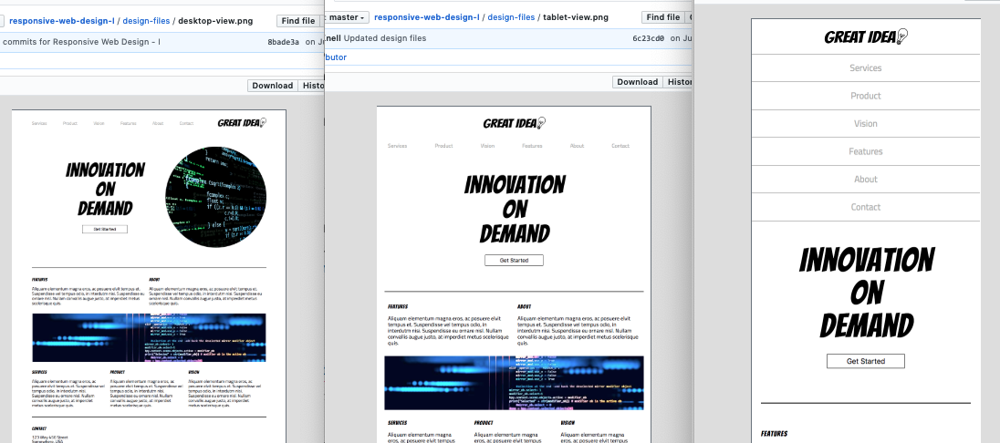

Advanced CSS : Responsive Design : Media Querries
Now that we have flexbox in our toolbelt, we can use it's magic to control our designs to fit different devices. We learned to implement a standard viewport meta tag to enable media querries, then used those skills to build the tablet and mobile versions of our previous "great idea" project.

I decided to rebuild the original from scratch.
Our project was originally built using block and inline-block elements. That worked for desktop, but I thought it would be much easier to do all three designs if I implemented flexbox from the ground up. I also thought it would be good practice to do the same project, but for speed. I got 80% of the way there in about 45 minutes. (Compared to 3 hours given for the first project.) I got hung up on my navigation structure (including the image as an anchor tag, or bumping it out), and this ate up a bunch of time. It took me 2 hours and and half of my 3 hours to get done re-building just the desktop version... but it paid off. I was able to crush the tablet version @800 in under 20 minutes, and then the mobile in another 15-20 minutes the next day
Follow along...